Lesson 6 of 7
Control and maximum power point tracking
A converter's duty cycle is a knob. For a solar converter there are two questions. Which panel voltage should it hold, as sunlight, temperature and shade move the panel's best operating point? And how should it switch to waste the least on the way? This lesson answers both, with eight tracking algorithms and four efficiency controls, all measured on the same bench.
PWM: two loops
A pulse-width modulator (PWM) compares a control voltage with a carrier ramp to make the gate pulses, so the duty cycle follows the control voltage. A fast inner loop, with a few kilohertz of bandwidth, holds the panel voltage at a reference. A slow outer loop, the maximum power point tracker (MPPT), moves that reference 10 to 50 times a second. The outer loop must wait for the inner one to settle before it reads the power, or it chases its own transients (Femia et al. 2005).
The panel's power curve
A PV cell is a current source in parallel with a diode. Short-circuited, it delivers its photocurrent at zero volts. Open-circuited, it reaches V_oc at zero current. Power peaks in between, at the maximum power point (MPP). A panel is built from substrings, each with a bypass diode. Shade one substring and the curve grows a second hill. A tracker that only climbs locally can get stuck on the smaller one.
A generic 72-cell, ~390 W-class panel model (single-diode cells, three bypass-diode substrings), not a specific product.
How trackers are scored
EN 50530 defines dynamic MPPT efficiency as the energy actually drawn from the panel over a test, divided by the energy it could have delivered at its maximum power point:
The standard's dynamic test ramps the irradiance up and down between 30 % and 100 % of nominal, and between 10 % and 50 %, at slopes from 0.5 to 100 W/m2/s. The control lab runs compressed versions of both ramp sequences, plus cloud edges, partial shading and steady light. Every tracker gets the same simulated panel and sensor noise, and the same kind of two-parameter tuning. Numbers below come from that benchmark (mean of three noise seeds). The line under each tracker gives its dynamic MPPT efficiency on the EN 50530-style 30-100 % ramps, on cloud edges and under partial shading. The ramps are compressed and this is not a compliance test.
Hill climbers
Perturb and observe (P&O), fixed step
Nudge the voltage reference, measure the power, keep going if power rose and reverse if it fell. It is simple and needs no model, but it never stops: in steady light it oscillates around the peak by about one step. During a ramp it can misread a rise in sunlight as a good step and walk the wrong way.
P&O, variable step
Scale the step with the slope of the power curve: big steps far from the peak, where |dP/dV| is large, and small steps near it. It converges faster, but noise on a small slope can leave it timid at the top.
Incremental conductance (InC)
At the MPP, dP/dV = I + V dI/dV = 0, so dI/dV = -I/V. Comparing the incremental conductance dI/dV with the instantaneous conductance -I/V tells the tracker which side of the peak it is on (Hussein et al. 1995). In principle it can then hold still at the peak instead of hunting. In practice it still needs voltage changes to measure dI/dV, and noise keeps it stepping. When the voltage has not moved, a change in current means the light changed, which helps it tell a cloud from its own step. In this benchmark that pays off only for the variable-step version: fixed-step InC does no better than P&O on cloud edges.
InC, variable step
The same test with a step proportional to |dP/dV| (Liu et al. 2008).
Model-based: fractional open-circuit voltage
For crystalline silicon, V_mpp/V_oc stays near a constant k. For this panel model k is 0.79 to 0.84 across light and temperature. Disconnect the panel briefly, measure V_oc, and regulate to k V_oc (Masoum et al. 2002). It is cheap and insensitive to noise. But it is never exactly on the peak, because k drifts, and it harvests nothing while it measures. Its biggest weakness shows in the tuning: shade pulls the best k up, strong even light pulls it down, and one constant cannot serve both. The tuned k = 0.84 scores 97.8 % in steady light, where k = 0.80 would score 99.9 %.
Gradient: extremum seeking and ripple correlation
Add a small sinusoidal dither a sin(wt) to the voltage. The power then wobbles with an amplitude proportional to dP/dV, in phase on the left of the peak and in anti-phase on the right. High-pass the power, multiply by the dither and integrate, and the product averages to a value proportional to dP/dV: a gradient climb (Leyva et al. 2006). With an ideal high-pass filter it is (a/2) dP/dV; the simple filter used here delivers about 0.8 of that. Ripple correlation control (RCC) does the same with the converter's own switching ripple as the dither, at kilohertz rates (Esram et al. 2006; Kimball & Krein 2008; Brunton et al. 2010). Our 50 Hz bench cannot see switching ripple, so it injects a 5 Hz dither instead.
Global search: particle swarm and scan-and-track
Partial shading defeats every local method above: they all climb whichever hill they start on. Global methods look at the whole curve first. A particle swarm (PSO) moves a few candidate voltages toward their own best and the swarm's best, then hands over to local tracking (Miyatake et al. 2011). Scan-and-track sweeps the voltage window and parks at the best point (Patel & Agarwal 2008). The swarm restarts on any large change in power, and the scan on a large drop or once a minute. That is their weakness: every cloud edge looks like a possible new shading pattern, so they spend energy re-searching.
Which one?
| Tracker | Family | EN 50530-style 30-100 % | Clouds | Shading | Overall |
|---|
On slow ramps and in steady light, the hill climbers and extremum seeking all reach 99.7-99.9 %, and the differences are tenths of a percent. Cloud edges spread them out more (97.8-99.8 %). Under partial shading, only the global methods escape the local peak, and the gap is tens of percent. The flagship controller therefore uses scan-and-track: it gives up a few tenths on clean ramps to be safe when shade arrives. Particle swarm scores slightly higher overall in this benchmark. The scan has fewer parameters and no random numbers, so its worst case is easier to bound. Both have C references tested identical to the Python. Race them yourself in the control lab.
Controls that cut the converter's own loss
Once the operating point is chosen, the controller can still change how it switches. Adaptive frequency and dead time are tuned online from power measurements alone. The controller steps one setting, keeps the step only if the measured power at the same operating point improved by more than its measurement resolution, and otherwise turns around. Averaging five seconds of measurements resolves about 25-35 mW. So the frequency climb usually lands on the optimum, while the dead-time climb usually stops short, where the remaining gains are smaller than the sensors can see. Burst mode and bypass are different: they are design-time rules worked out with the model. In the loss model, the gains are largest at light load, which is where a solar converter spends its mornings and evenings.
Adaptive switching frequency
Switching losses (output charge, overlap, gate drive) grow in proportion to f_s. Ripple-driven losses (inductor AC copper and core, RMS current) shrink as f_s rises. Their sum has a minimum, and it moves with voltage ratio and load (Al-Hoor et al. 2009).
Adaptive dead time
Too short a dead time and the inductor current cannot finish swinging the switch node, so the incoming switch turns on into leftover voltage (residual fraction r). Too long and the current freewheels through the GaN switch's reverse channel, which drops about 2-3 V, far more than a silicon diode. The optimum depends on the current, so it moves with load (Yousefzadeh & Maksimovic 2006).
Burst mode
At light load the fixed losses (gate drive, housekeeping) dominate. Burst mode switches at an efficient power P_b for a fraction delta = P/P_b of the time and idles in between (Peterchev & Sanders 2006). On a solar input it has a hidden cost. The panel keeps pushing current into the input capacitor between bursts, so the panel voltage ripples and leaves the MPP. The model counts it: a triangular ripple dV costs kappa dV2/24, where kappa is the curvature of the power-voltage curve. That is a small-signal estimate, so bursts are only allowed while the ripple stays under 5 % of the panel voltage. Much of the gain comes from idling the housekeeping supplies between bursts (0.55 W down to 0.30 W, both estimates), so read the numbers as a model of the trade-off, not a promise.
Bypass
When the panel's MPP sits within 2 % of the battery voltage, the flagship closes a bidirectional GaN switch and stops switching altogether. It saves all switching loss but pins the panel at battery voltage. That costs about (1/2) kappa (V_mpp - V_bat)2 of tracking loss. The efficiency model weighs it against the saving; the reference controller still uses a simple 2 % band.
Turn the dials in the control lab's efficiency section, or see a whole day of energy in a day of sun.
Mode selection and the state machine
Once the tracker picks a panel voltage V_ref, the ratio M = V_out / V_ref decides the mode: buck below 0.97, boost above 1.03, and buck-boost in between. A 1 % hysteresis stops it chattering at a boundary. A lookup table generated by the loss model sets the switching frequency for each ratio and power band, and the hill climb above refines it online.

See the flagship's own controller run tick by tick in the MPPT sandbox.